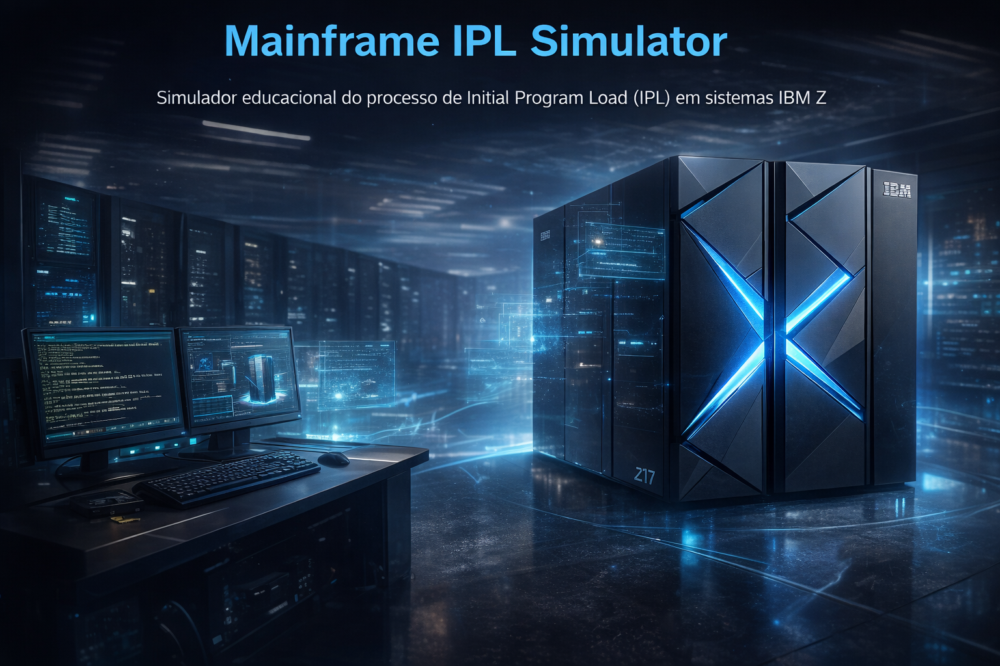

Simulador educacional do processo de Initial Program Load (IPL) em sistemas IBM Z

Este projeto apresenta um simulador educacional do processo de IPL (Initial Program Load) utilizado em sistemas IBM Z / Mainframe.
O objetivo é demonstrar de forma visual e interativa as etapas fundamentais de inicialização de um sistema operacional como o z/OS.
Durante a execução do simulador é possível observar o fluxo típico de inicialização:
Esse processo representa, de forma simplificada, o ciclo de boot de um ambiente real de mainframe.
Escolha abaixo a versão do simulador:
Simulador IPL Básico Simulador IPL Completo Um dia Tenebroso Simulador TCP/IP Simulador TCP/IP Simples JES2 Simulator SDSF Simulator Operating Environment Input/Outpuy Supervisor Addressability Task Management Storage Management Recovery Termination Manager IPL Troubleshooting Versão Bellacosa MainframeEste simulador foi desenvolvido exclusivamente para fins educacionais e não representa um ambiente real de produção.
Algumas limitações incluem:
Em um ambiente real de mainframe, o processo de IPL envolve componentes adicionais como:
Este simulador faz parte das iniciativas educacionais da comunidade Bellacosa Mainframe, com foco na disseminação de conhecimento sobre sistemas IBM Z e tecnologias de missão crítica.
O objetivo é tornar o aprendizado de arquitetura mainframe mais acessível, visual e interativo.
| Artigo | Preview | Ação |
|---|---|---|
| O método de 60 segundos para descobrir... | Ler Artigo | |
| Você usa React todos os dias... | Ler Artigo | |
| O computador que nunca dorme | Ler Artigo | |
| Mainframe não é legado | Ler Artigo | |
| Mainframe meu caro | Ler Artigo | |
| O dia em que decretaram a morte... | Ler Artigo | |
| ABEND em mainframe não é azar | Ler Artigo | |
| Por que um dev moderno deveria... | Ler Artigo | |
| Debugando COBOL no mainframe | Ler Artigo | |
| CI/CD no mainframe | Ler Artigo | |
| Apostila DevOps Mainframe Jenkins | Ler Artigo | |
| ENIAC - O avô brutal dos mainframes | Ler Artigo |